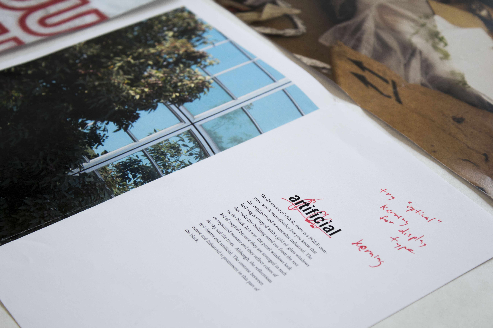
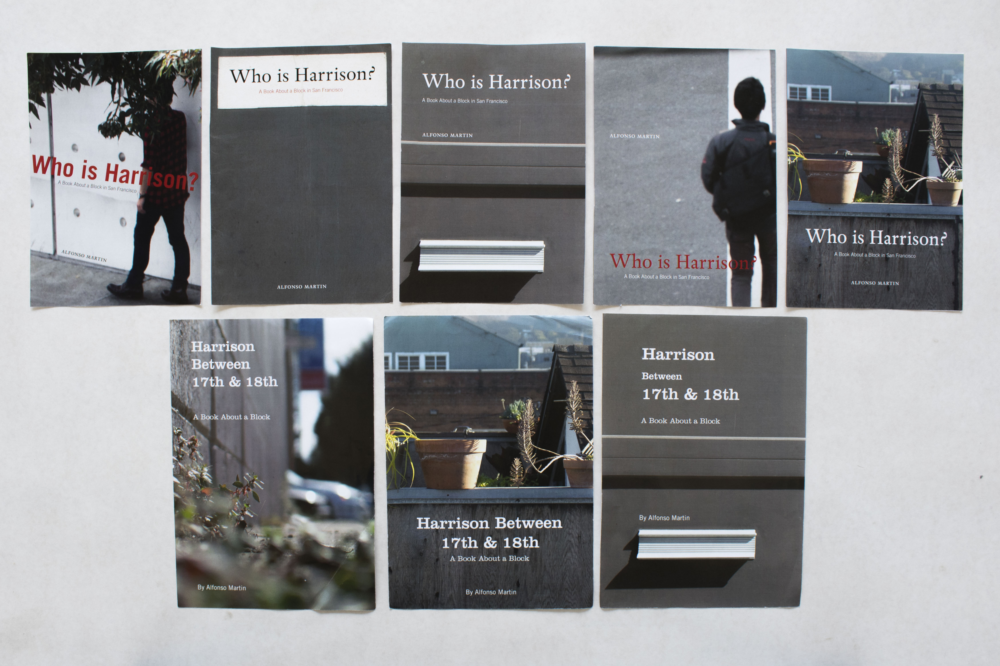
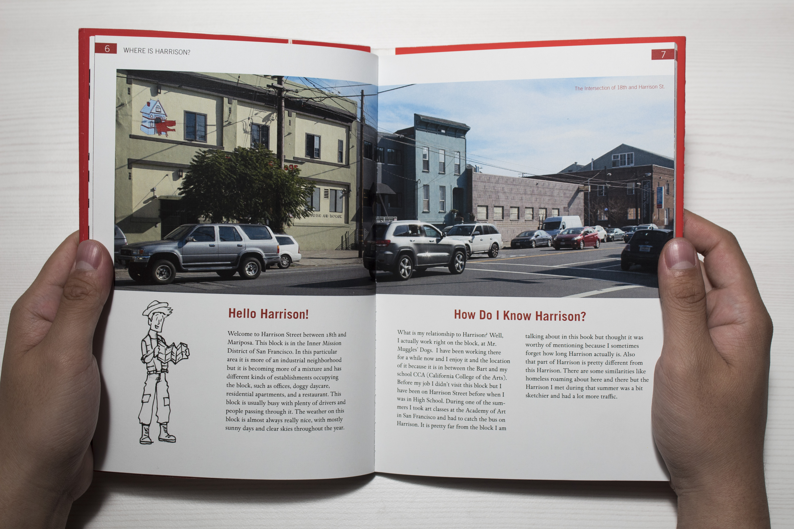
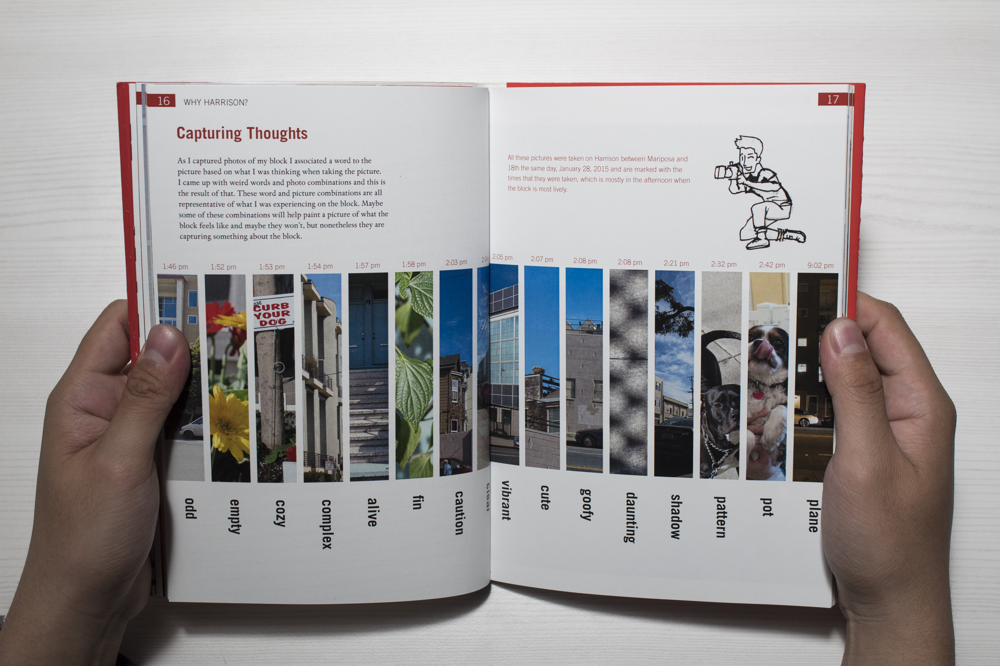
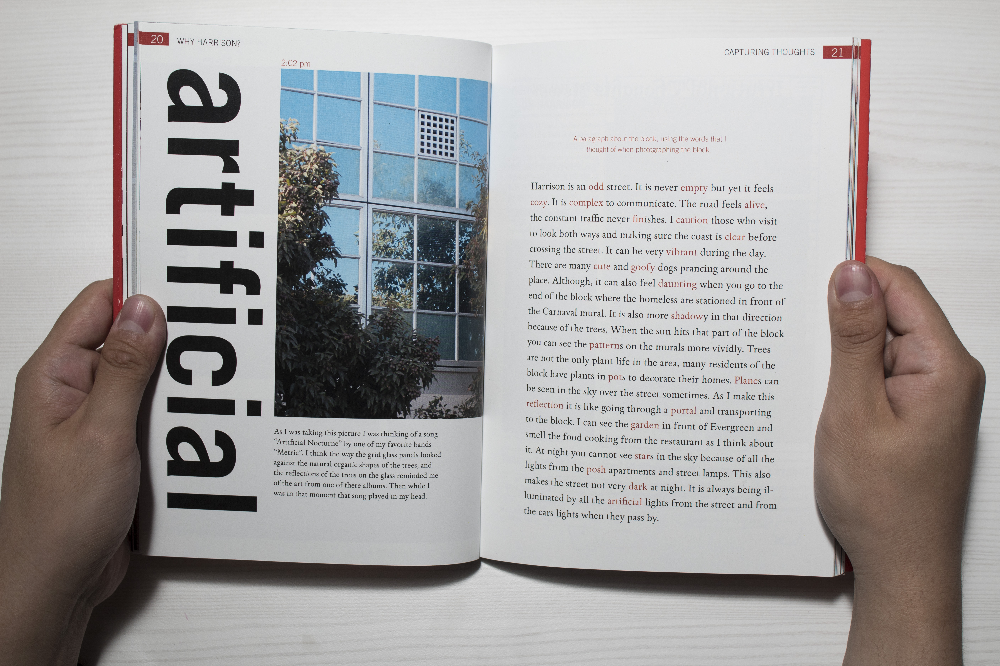
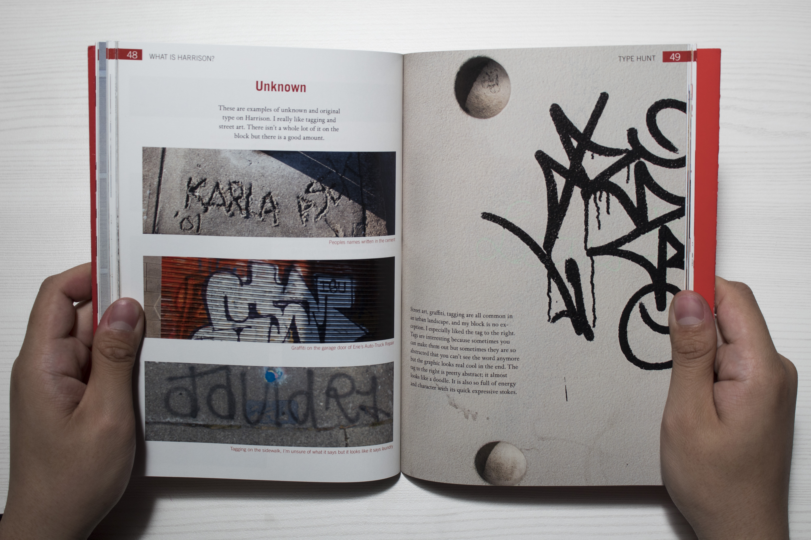
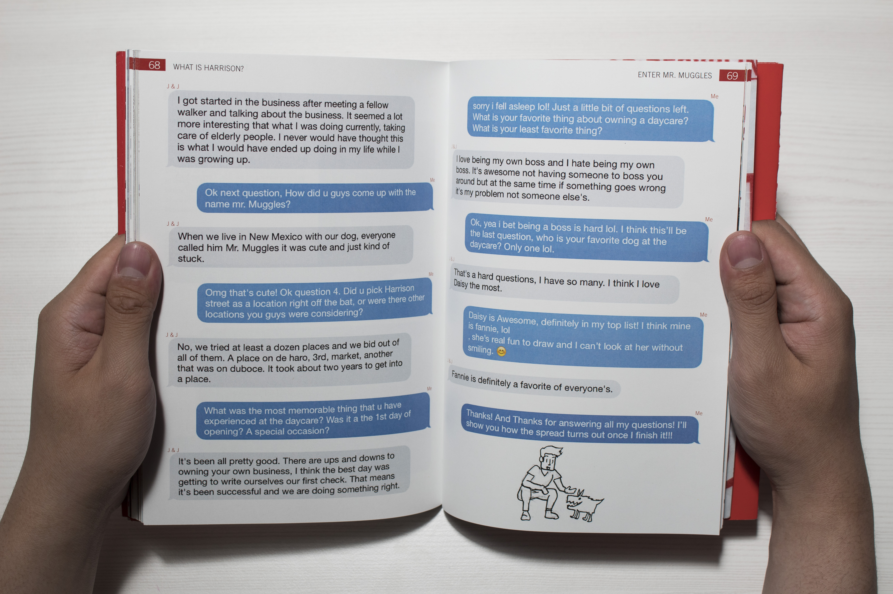

Who is Harrison?
Book Design, Print Design
Who is Harrison? A Book About a Block in San Francisco, is an entire book about a specific block in San Francisco. My chosen block was Harrison Street between Mariposa and 18th Streets, in the Mission District. This book is a recording of my view of the block personified as a character named Harrison.
PROCESS
When making this book I worked on Harrison. Compiling information on a single block was intriguing because I got to capture a point in my life where I spent a lot of time on that block. Looking back on this project I get so many memories that flood back to me. The character Harrison in the book essentially me duing that time period.







